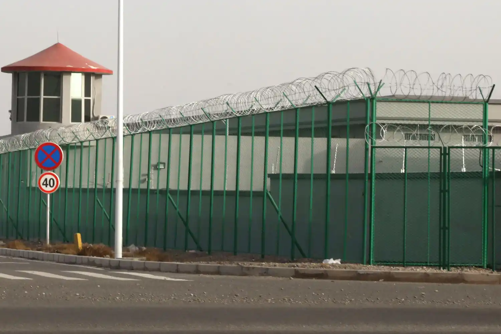

Credit: AP Photo/Ng Han Guan via Alamy
For decades, China has engaged in a systematic programme of repression in Xinjiang, focused on ethnic minority groups including Kazakhs, Kyrgyz and Uyghurs.
Investigations and human rights groups have highlighted detention camps, forced labour and oppressive surveillance, all designed to force these majority Muslim people to ‘assimilate’ with mainstream Chinese culture.